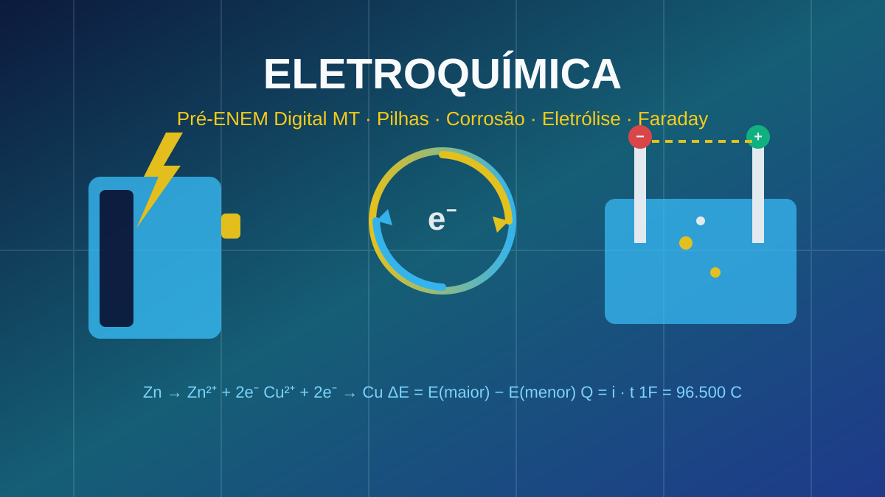

Pré-ENEM Digital MT
Eletroquímica · Lição 26
Eletroquímica · Lição 26
⭐ XP: 0
Vidas: ❤️❤️❤️
Uma jornada interativa com 5 cientistas brasileiras como mentoras, 5 missões, dinâmica Fato ou Fake, simuladores virtuais de pilha e de Faraday, e 15 desafios estilo ENEM com feedback explicativo detalhado.

Cinco cientistas brasileiras vão te guiar por essa trilha elétrica
Conecta ENEM — Lição 26 · Editora LT · Pilhas, metal de sacrifício e eletrólise
Complete as missões, desvende o Fato ou Fake e conquiste badges
Suas conquistas nesta jornada